สำหรับบุคลากร
ใช้ได้ทั้งมือถือ แท็บเล็ต และคอมพิวเตอร์ เปิดลิงก์ในไลน์ได้เลย ไม่ต้องติดตั้งแอป
1. เข้าสู่ระบบ
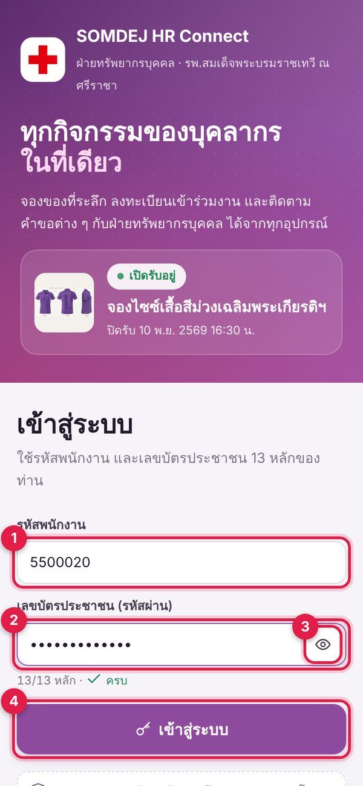
จุดในภาพ
- รหัสพนักงาน ตัวเลขตามบัตรพนักงาน เช่น 5660101
- เลขบัตรประชาชน 13 หลัก ใช้เป็นรหัสผ่าน พิมพ์ติดกัน หรือวางเลขที่มีขีดก็ได้ ระบบตัดขีดออกให้ ด้านล่างมีตัวนับ 13/13 หลัก · ครบ
- รูปตา กดเพื่อดูเลขที่พิมพ์ (แสดงเป็นกลุ่ม x-xxxx-xxxxx-xx-x ให้ตรวจง่าย)
- เข้าสู่ระบบ ระบบตรวจกับฐานข้อมูลบุคลากรของโรงพยาบาลทันที
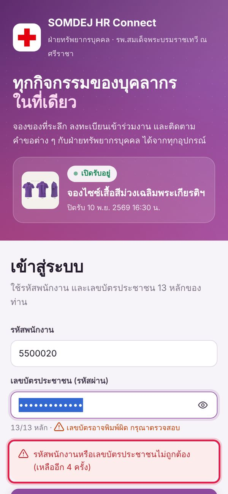
ถ้าเข้าไม่ได้
- ข้อความสีแดงบอกจำนวนครั้งที่เหลือ · ผิด 5 ครั้งติดกันระบบพัก 10 นาที
- ถ้าขึ้นเตือน "เลขบัตรอาจพิมพ์ผิด" แปลว่าตัวเลขหลักสุดท้ายไม่ตรงสูตรของบัตรประชาชน ให้ตรวจอีกครั้ง
- พนักงานใหม่ที่ยังไม่มีชื่อในรายการ ก็เข้าได้ ถ้าข้อมูลตรงกับระบบ HR
- ถ้าขึ้นว่า "เชื่อมต่อระบบ HR ไม่ได้" ให้ลองใหม่ภายหลัง หรือแจ้ง HR ให้บันทึกแทน
หน้าเข้าสู่ระบบมีลิงก์ วิธีเข้าสู่ระบบ และ คู่มือการใช้งาน (หน้านี้) อยู่ใต้ปุ่มเข้าสู่ระบบ
2. หน้าแรก / กิจกรรมของฉัน
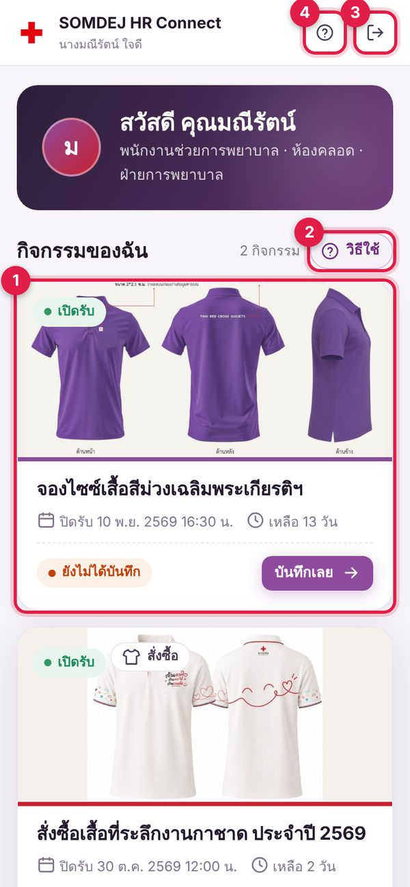
จุดในภาพ
- การ์ดกิจกรรม 1 ใบ = 1 กิจกรรม มีวันปิดรับ เวลาที่เหลือ และสถานะของคุณ (เช่น ยังไม่ได้บันทึก) แตะปุ่ม บันทึกเลย หรือแตะที่การ์ดเพื่อเข้าไปทำรายการ
- ? วิธีใช้ มีทุกหน้า อธิบายหน้านั้นทีละขั้น และมีลิงก์มาที่คู่มือนี้
- ออกจากระบบ (บนคอมอยู่มุมซ้ายล่าง)
- ปุ่ม ? บนแถบด้านบน (มือถือ) ทำงานเหมือนข้อ 2
3. จองไซซ์เสื้อสีม่วงเฉลิมพระเกียรติฯ (ไม่มีค่าใช้จ่าย)
ใช้เวลาไม่ถึง 1 นาที · คนละ 1 ตัว · เลือกแบบชายหรือหญิงได้ตามที่ถนัด ไม่จำเป็นต้องตรงกับเพศ · แก้ไขได้จนถึงวันปิดรับ
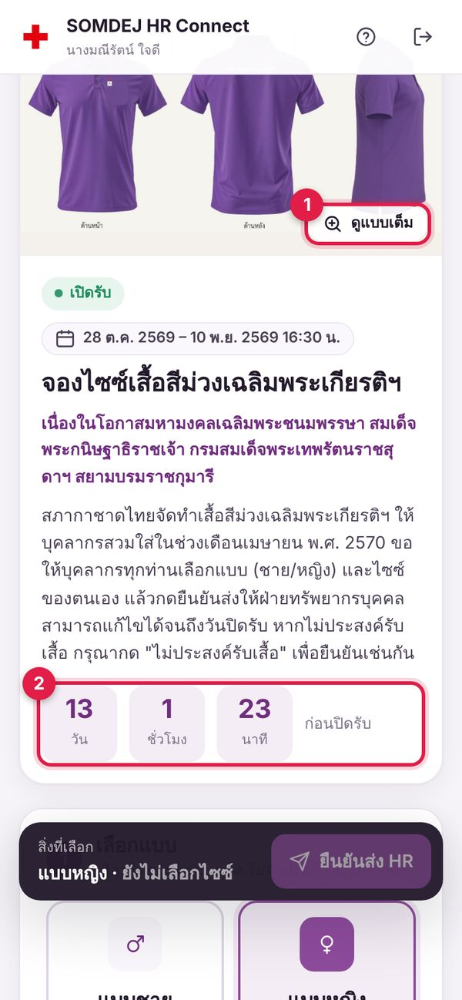
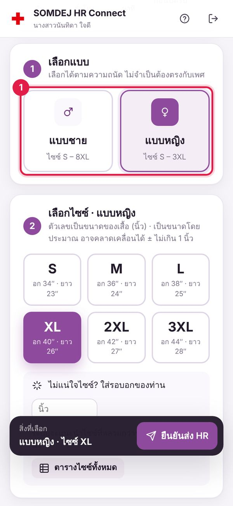
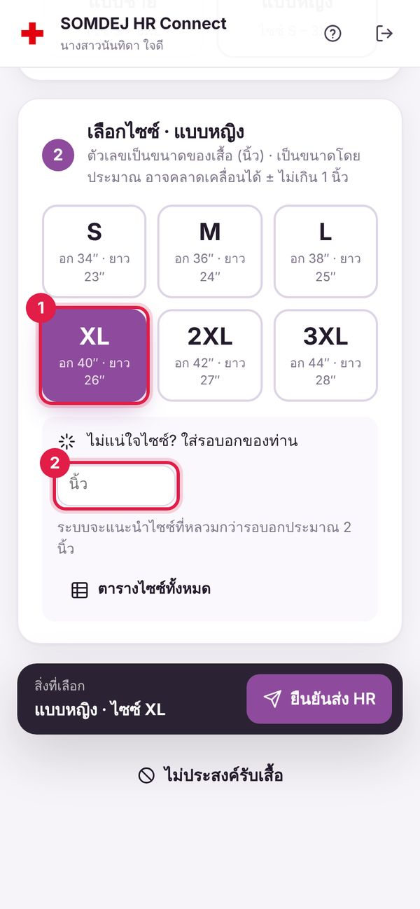
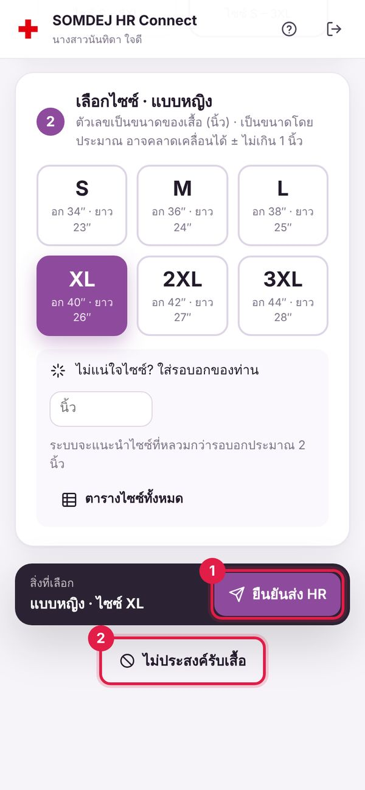
- อ่านรายละเอียดด้านบน กด ดูแบบเต็ม เพื่อขยายรูปเสื้อ (ด้านหน้า/หลัง/ข้าง)
- เลือกแบบ: แบบชาย (S–8XL) หรือแบบหญิง (S–3XL)
- เลือกไซซ์: ตัวเลขใต้ไซซ์คือขนาดของ ตัวเสื้อ เป็นนิ้ว เช่น "อก 40″ · ยาว 26″" (คลาดเคลื่อนได้ไม่เกิน ±1 นิ้ว) ถ้าไม่แน่ใจ ใส่ รอบอกของคุณ ในช่อง "ไม่แน่ใจไซซ์?" ระบบแนะนำไซซ์ที่หลวมกว่ารอบอกประมาณ 2 นิ้ว (ขึ้นป้าย แนะนำ) · กด ตารางไซซ์ทั้งหมด เพื่อดูตารางเต็ม
- แถบสีเข้มด้านล่างแสดงสิ่งที่เลือก กด ยืนยันส่ง HR
- ตรวจในหน้าต่างสรุปแล้วกด ยืนยันส่ง HR อีกครั้ง (กด กลับไปแก้ ถ้ายังไม่ถูก)
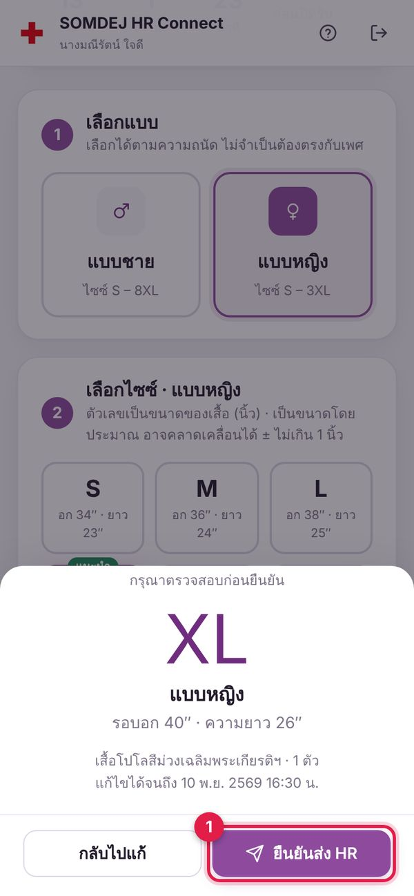
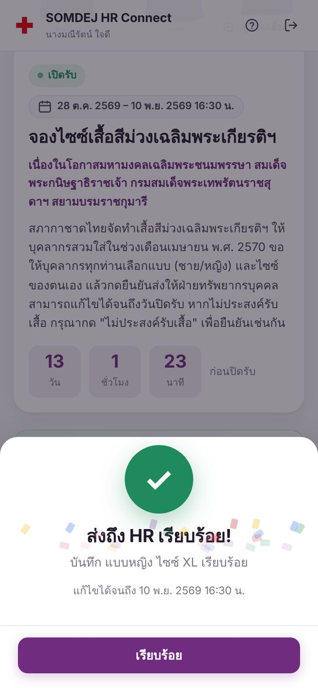
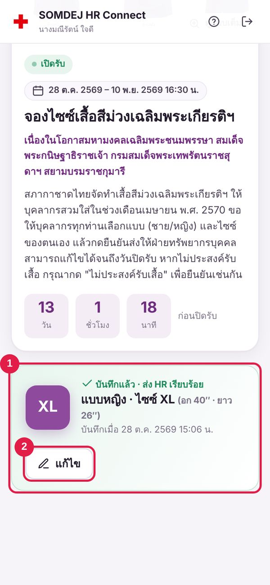
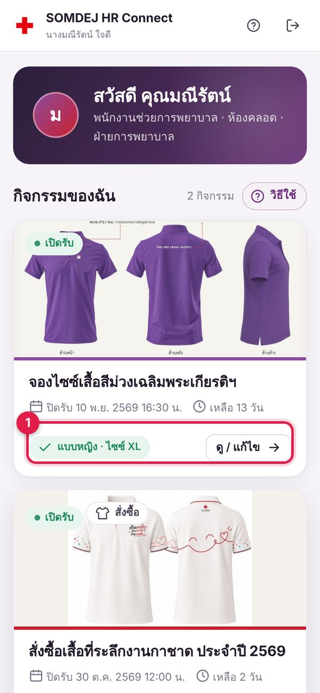
ถ้ามีอีเมลในระบบ HR จะได้อีเมลยืนยันไซซ์ด้วย
4. สั่งซื้อเสื้อที่ระลึก + ชำระเงิน
ใช้กับกิจกรรมที่มีค่าใช้จ่าย เช่น เสื้อที่ระลึกงานกาชาด ประจำปี 2569 (เฉพาะรายชื่อที่ HR กำหนด)
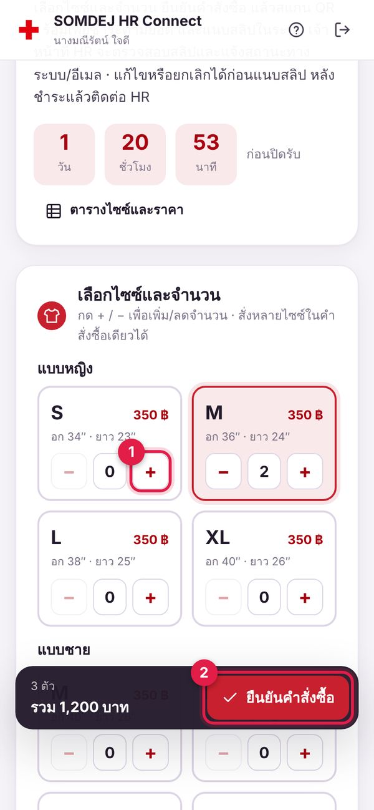
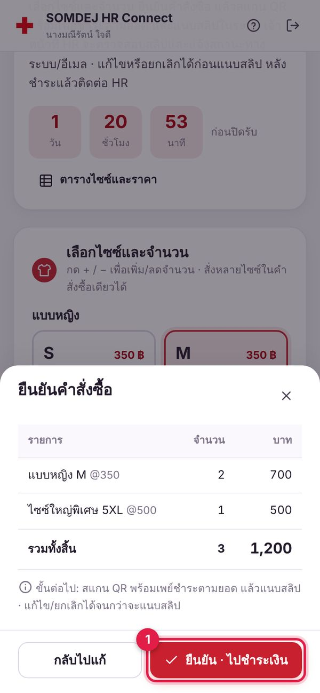
- ดูรูปและตารางไซซ์/ราคา แล้วกด + ที่ไซซ์ที่ต้องการ (เลือกได้หลายไซซ์ หลายตัว ในคำสั่งซื้อเดียว) ยอดรวมขึ้นที่แถบด้านล่าง
- กด ยืนยันคำสั่งซื้อ → ตรวจรายการ → ยืนยัน · ไปชำระเงิน ระบบออกเลขที่คำสั่งซื้อ เช่น RC69-0029
- หน้าต่างชำระเงินแสดง QR พร้อมเพย์ที่ใส่ยอดเงินให้แล้ว
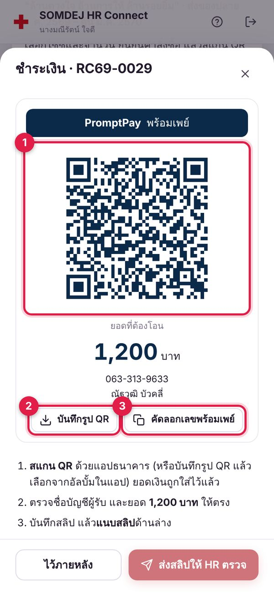
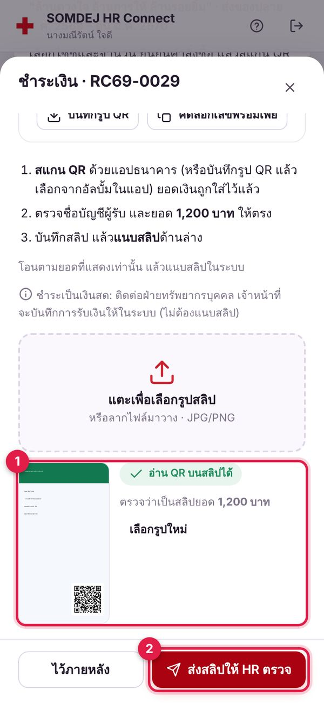
- วิธีโอนบนมือถือเครื่องเดียว: กด บันทึกรูป QR → เปิดแอปธนาคาร → สแกน → เลือกรูปจากอัลบั้ม → ยอดเงินขึ้นให้เอง · หรือกด คัดลอกเลขพร้อมเพย์ แล้วกรอกยอดเอง
- ตรวจชื่อบัญชีผู้รับ และยอดเงินให้ตรงกับที่แสดง แล้วโอน
- แตะกล่อง แตะเพื่อเลือกรูปสลิป เลือกสลิปจากอัลบั้ม ระบบย่อรูปและอ่าน QR บนสลิป (ขึ้น อ่าน QR บนสลิปได้)
- กด ส่งสลิปให้ HR ตรวจ (ถ้ายังไม่โอน กด ไว้ภายหลัง แล้วกลับมาแนบได้)
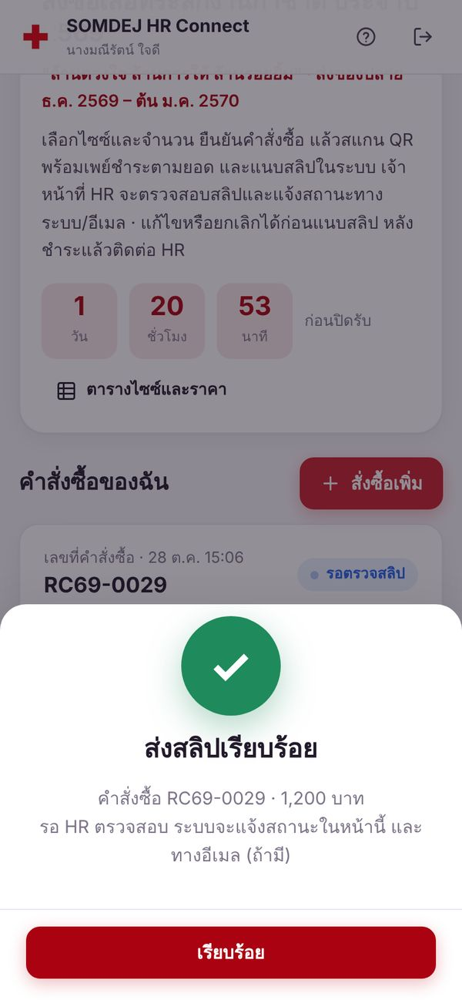
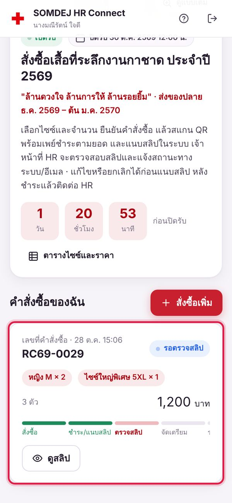
สถานะคำสั่งซื้อ
| สถานะ | ความหมาย / สิ่งที่ต้องทำ |
|---|---|
| รอชำระเงิน | ยังไม่แนบสลิป · แก้ไขหรือยกเลิกคำสั่งซื้อเองได้ |
| รอตรวจสลิป | HR กำลังตรวจ ไม่ต้องทำอะไร |
| สลิปไม่ถูกต้อง | HR ตีกลับพร้อมเหตุผล (เช่น ยอดไม่ตรง) · แนบสลิปใหม่ได้ |
| ชำระแล้ว | ยืนยันการชำระแล้ว (โอน หรือเงินสด) · ถ้าต้องแก้ไขติดต่อ HR |
| กำลังจัดเตรียมคำสั่งซื้อ → สั่งซื้อแล้ว รอจัดส่ง → ส่งแล้ว รอรับ → รับแล้ว | ความคืบหน้าของสินค้า แจ้งทางระบบและอีเมล |
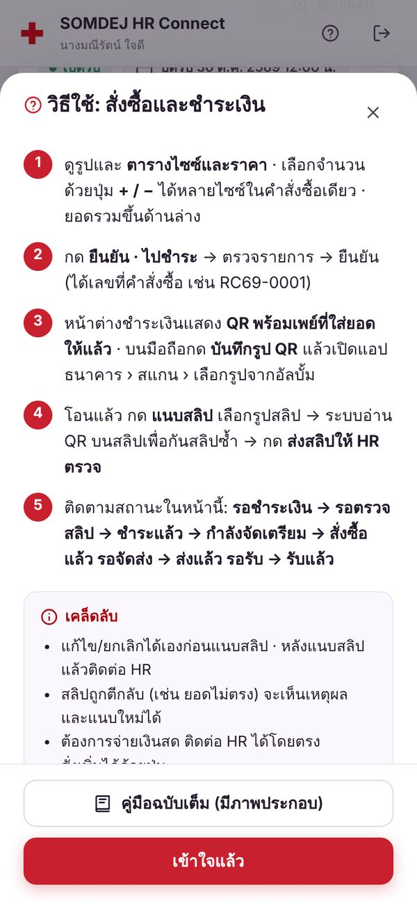
ปุ่ม "? วิธีใช้" ในทุกหน้า
กดเมื่อไม่แน่ใจ ระบบสรุปขั้นตอนของหน้านั้นทีละข้อ พร้อมเคล็ดลับ และปุ่ม คู่มือฉบับเต็ม ที่เปิดมาหัวข้อที่ตรงกันในคู่มือนี้
สำหรับหัวหน้าฝ่าย/หน่วย
เข้าระบบด้วยรหัสพนักงาน + เลขบัตรประชาชนเหมือนบุคลากรทั่วไป ถ้า HR ตั้งให้เป็นหัวหน้า จะเห็นเมนู กิจกรรม (หัวหน้า) เพิ่มทางซ้าย
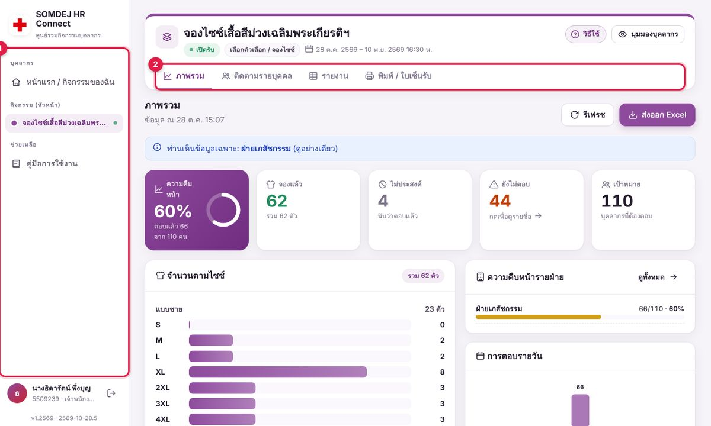
- เห็น เฉพาะบุคลากรในฝ่ายหรือหน่วยที่ดูแล (มีแถบสีฟ้าบอกขอบเขต) และ ดูได้อย่างเดียว แก้คำตอบแทนไม่ได้
- ภาพรวม: เปอร์เซ็นต์ตอบแล้ว จำนวนไซซ์ ความคืบหน้ารายหน่วย
- ติดตามรายบุคคล: แตะ ยังไม่ตอบ เพื่อดูคนที่ยังไม่บันทึก แล้วช่วยแจ้งในหน่วย · ส่งออกที่กรอง เป็น Excel (หัวหน้าไม่เห็นเบอร์โทร)
- รายงาน และ พิมพ์ / ใบเซ็นรับ: ใช้ตอนแจกเสื้อในหน่วย (ดูข้อ 15)
- ถ้า HR ใส่อีเมลไว้ จะได้รับ อีเมลสรุปรายชื่อผู้ยังไม่ตอบ ตามรอบที่ HR ตั้ง
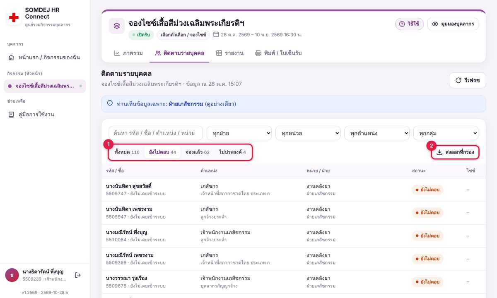
สำหรับผู้ดูแล (HR)
ผู้ดูแลเห็นเมนูครบ: แต่ละกิจกรรมมี พื้นที่ทำงานของตัวเอง (แถบหัวสีประจำกิจกรรม + แท็บ) จึงไม่ปนกัน และมีเมนูระบบ (รายชื่อ หัวหน้า ตั้งค่า)
| เมนูซ้าย | ใช้ทำอะไร |
|---|---|
| หน้าแรก / กิจกรรมของฉัน | มุมมองแบบบุคลากร (ผู้ดูแลก็จองเสื้อของตัวเองได้ที่นี่) |
| กิจกรรม (จุดสี) | เข้าพื้นที่ทำงานของกิจกรรมนั้นทันที · จุดเขียวกะพริบ = กำลังเปิดรับ |
| จัดการกิจกรรมทั้งหมด | ดูทุกกิจกรรม สร้างกิจกรรมใหม่ |
| รายชื่อบุคลากร · หัวหน้าฝ่าย/หน่วย · ตั้งค่าระบบ | ข้อมูลกลางที่ใช้ร่วมกันทุกกิจกรรม |
| คู่มือการใช้งาน | เปิดหน้านี้ |
7. จัดการกิจกรรมทั้งหมด
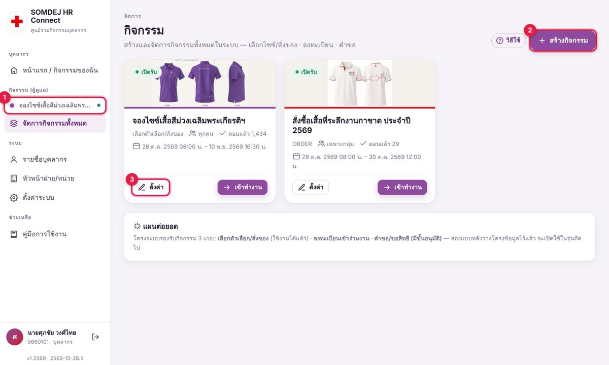
- เมนูกิจกรรม ทางซ้าย คลิกเข้าพื้นที่ทำงานได้เลย
- สร้างกิจกรรม: เลือกชนิด เลือกตัวเลือก / จองไซซ์ (ไม่เก็บเงิน) หรือ สั่งซื้อ + ชำระเงิน แล้วกรอกตามข้อ 12
- ตั้งค่า / เข้าทำงาน ของแต่ละกิจกรรม
8. ภาพรวม + สรุปส่งจัดซื้อ (กิจกรรมจองไซซ์)
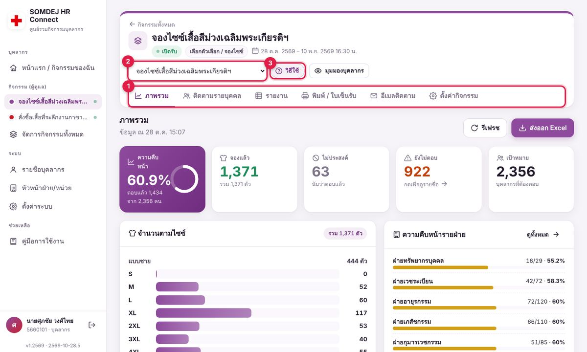
- แท็บของกิจกรรม: ภาพรวม · ติดตามรายบุคคล · รายงาน · พิมพ์ / ใบเซ็นรับ · อีเมลติดตาม · ตั้งค่ากิจกรรม
- สลับกิจกรรม จากกล่องเลือกนี้ได้โดยไม่ต้องกลับไปเมนู
- ? วิธีใช้ ของแท็บที่เปิดอยู่ · ข้าง ๆ มีปุ่ม มุมมองบุคลากร เพื่อดูหน้าที่บุคลากรเห็นจริง
การ์ดด้านบน: ความคืบหน้า % · จองแล้ว · ไม่ประสงค์ · ยังไม่ตอบ (คลิกเพื่อไปดูรายชื่อ) · เป้าหมาย · ด้านล่างมี จำนวนตามไซซ์ แยกแบบชาย/หญิง และ ความคืบหน้ารายฝ่าย · ปุ่ม ส่งออก Excel ได้ไฟล์สรุปทั้งหมด
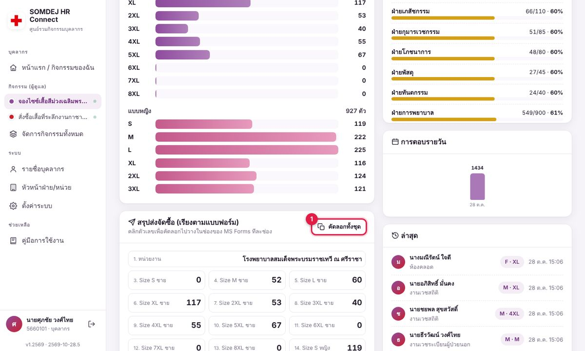
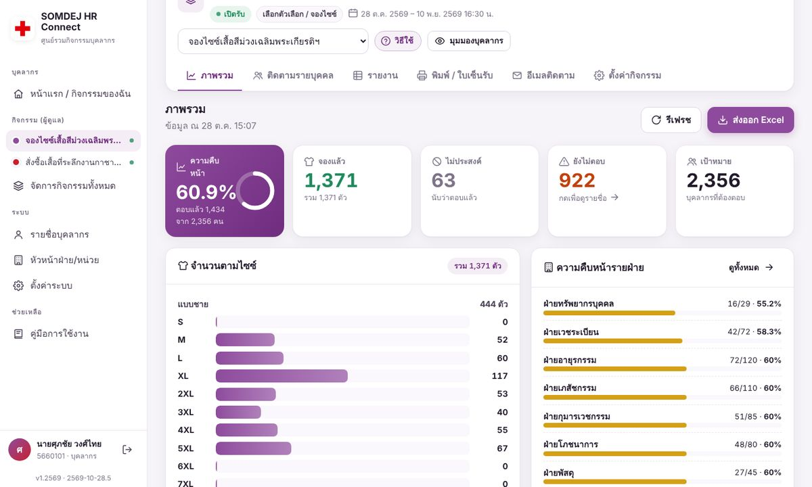
9. ติดตามรายบุคคล / บันทึกแทน
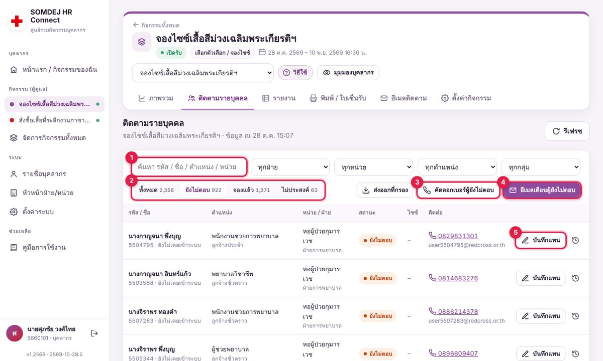
- ค้นหา รหัส/ชื่อ/ตำแหน่ง/หน่วย และกล่องกรอง ฝ่าย · หน่วย · ตำแหน่ง · กลุ่มบุคลากร
- แท็บสถานะ: ทั้งหมด · ยังไม่ตอบ · จองแล้ว · ไม่ประสงค์ (มีตัวเลขกำกับ)
- คัดลอกเบอร์ผู้ยังไม่ตอบ: ได้รายชื่อ + เบอร์ตามตัวกรอง วางในไลน์/โน้ตเพื่อโทรตามได้ทันที
- อีเมลเตือนผู้ยังไม่ตอบ: ส่งเฉพาะคนในตัวกรองปัจจุบันที่มีอีเมล (ระบบบอกจำนวนก่อนยืนยัน)
- บันทึกแทน / แก้แทน รายคน · ปุ่มนาฬิกาข้าง ๆ = ประวัติการเปลี่ยนแปลงของคนนั้น
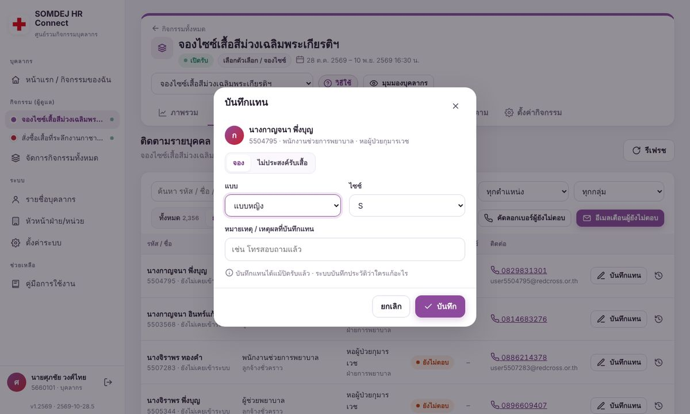
- ใช้เมื่อบุคลากรแจ้งไซซ์ทางโทรศัพท์/กระดาษ เข้าระบบไม่ได้ หรือแจ้งเปลี่ยนหลังปิดรับ
- ผู้ดูแลแก้แทนได้แม้หลังปิดรับ ระบบเก็บว่าใครแก้ เมื่อไร เปลี่ยนจากอะไรเป็นอะไร
- ล้างคำตอบ ทำให้คนนั้นกลับเป็น "ยังไม่ตอบ"
- ส่งออกที่กรอง ได้ Excel ตามตัวกรองปัจจุบัน เช่น รายชื่อผู้ยังไม่ตอบของฝ่ายการพยาบาล
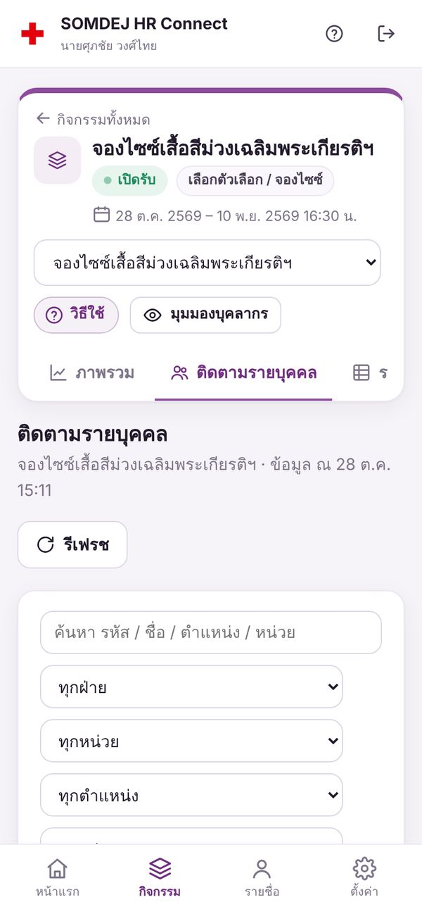
10. รายงาน
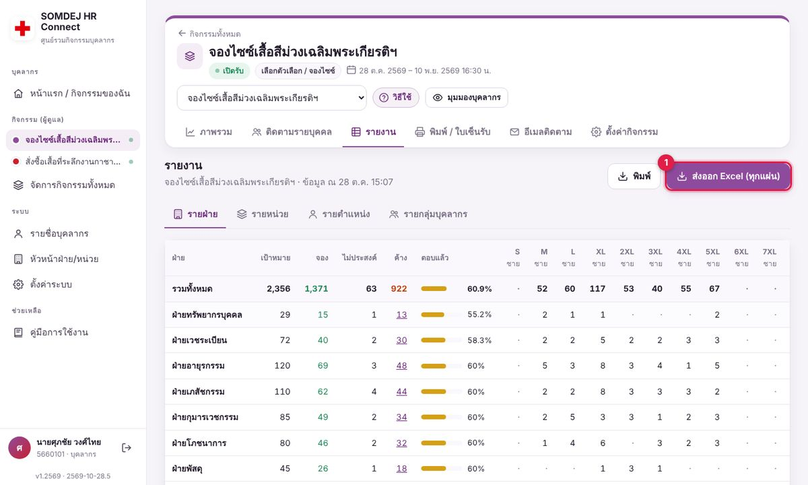
เลือกมุมมอง รายฝ่าย / รายหน่วย / รายตำแหน่ง / รายกลุ่มบุคลากร แต่ละแถวมี เป้าหมาย · ตอบแล้ว · ไม่ประสงค์ · ยังไม่ตอบ · % และจำนวนแต่ละไซซ์ · คลิกตัวเลข "ยังไม่ตอบ" เพื่อไปดูรายชื่อของกลุ่มนั้น · ไฟล์ Excel มีแผ่นงาน สรุปส่งจัดซื้อ · สรุปรายฝ่าย · สรุปรายหน่วย · สรุปรายตำแหน่ง · รายชื่อทั้งหมด · ยังไม่ตอบ
11. อีเมลติดตาม
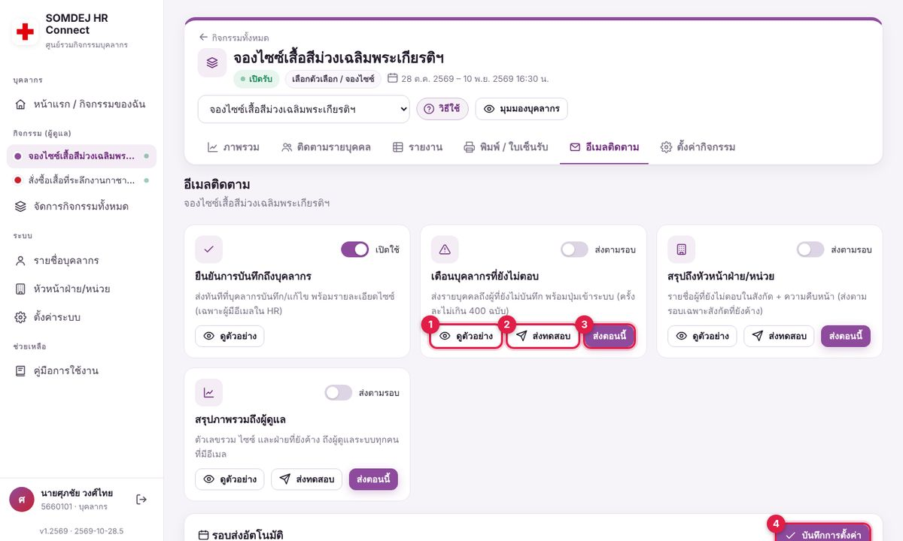
- ดูตัวอย่าง หน้าตาอีเมลจริงก่อนส่ง
- ส่งทดสอบ เข้าอีเมลของคุณเอง
- ส่งตอนนี้ ระบบบอกจำนวนผู้รับก่อนให้ยืนยัน
- บันทึกการตั้งค่า รอบส่งอัตโนมัติ
| อีเมล | ส่งถึง | ส่งเมื่อ |
|---|---|---|
| ยืนยันการบันทึก | บุคลากรที่กดยืนยัน | อัตโนมัติทันที (เปิด/ปิดได้) |
| เตือนบุคลากรที่ยังไม่ตอบ | คนที่ยังไม่ตอบและมีอีเมล | กดส่งเอง หรือตามรอบ |
| สรุปถึงหัวหน้าฝ่าย/หน่วย | หัวหน้าที่มีอีเมล (ความคืบหน้า + รายชื่อผู้ยังไม่ตอบในสังกัด) | กดส่งเอง หรือตามรอบ |
| สรุปภาพรวมถึงผู้ดูแล | ผู้ดูแลที่ใส่อีเมลไว้ | กดส่งเอง หรือตามรอบ |
รอบส่งอัตโนมัติ: เปิดสวิตช์ของอีเมลที่ต้องการ เลือกวันในสัปดาห์ เวลา และ "ส่งเพิ่มก่อนปิด N วัน" แล้วกด บันทึกการตั้งค่า · ด้านล่างมี บันทึกการส่ง ของกิจกรรมนี้
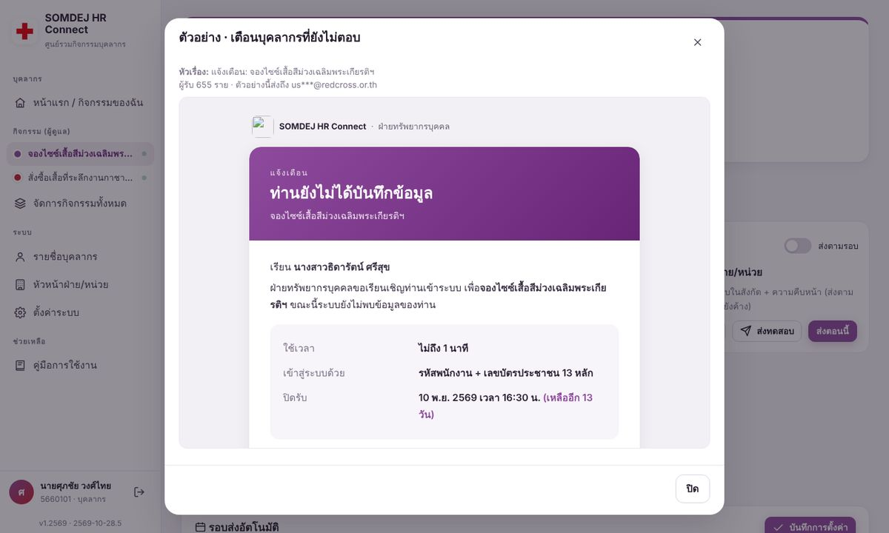
12. ตั้งค่ากิจกรรม (ขยายเวลา · แก้ไซซ์ · ผู้มีสิทธิ์)
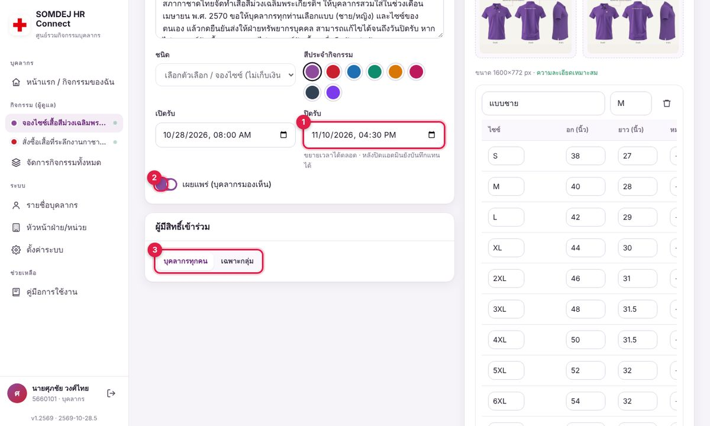
- ปิดรับ: ขยายเวลาได้ตลอด แล้วกดบันทึก
- เผยแพร่ (บุคลากรมองเห็น): ปิดเพื่อซ่อนกิจกรรมชั่วคราว
- ผู้มีสิทธิ์เข้าร่วม: บุคลากรทุกคน หรือเฉพาะกลุ่ม (ฝ่าย · กลุ่มบุคลากร · ตำแหน่ง · รหัสพนักงาน)
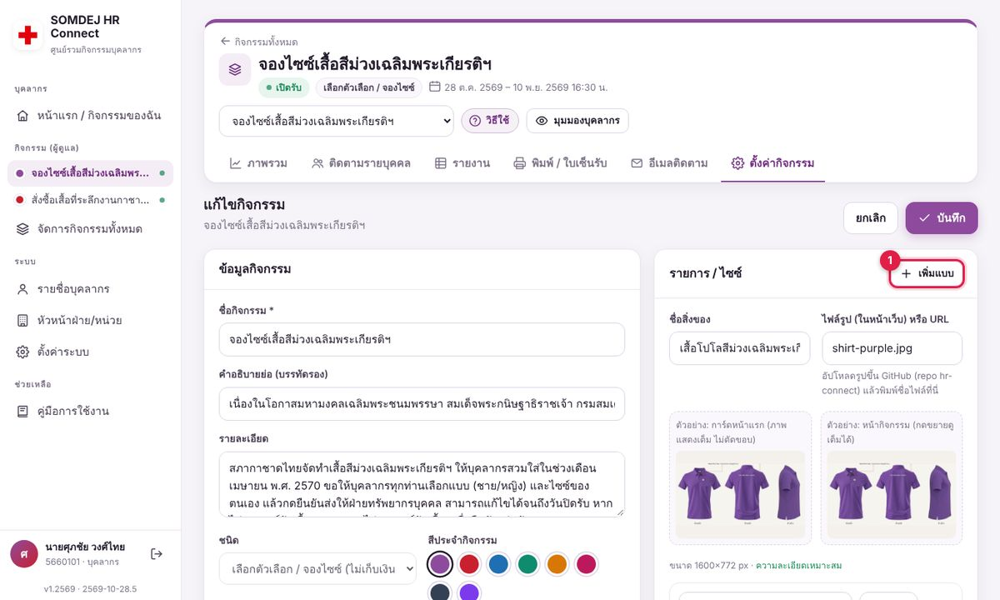
- ด้านบนมีชื่อ คำอธิบาย ชนิด สีประจำกิจกรรม และ รูปปก (มีตัวอย่าง + บอกขนาดภาพ/เตือนถ้าภาพเล็ก)
- เปลี่ยนรูปเสื้อ: อัปโหลดรูปขึ้น GitHub ในโฟลเดอร์เดียวกับหน้าเว็บ แล้วพิมพ์ชื่อไฟล์ เช่น
shirt-purple.jpg(หรือวางลิงก์รูปภาพสาธารณะ) → บันทึก - ไซซ์ที่มีคนเลือกแล้ว ลบไม่ได้ (กันข้อมูลหาย) ให้ใช้ "ซ่อน" แทน
- กิจกรรมสั่งซื้อมีเพิ่ม: ราคาต่อไซซ์ · พร้อมเพย์ · ชื่อบัญชีผู้รับ · คำนำหน้าเลขที่ · ค่าส่ง EMS (เปิด/ปิด)
- กด บันทึก มุมขวาบนทุกครั้ง
13. คำสั่งซื้อ / ตรวจสลิป / รับเงินสด
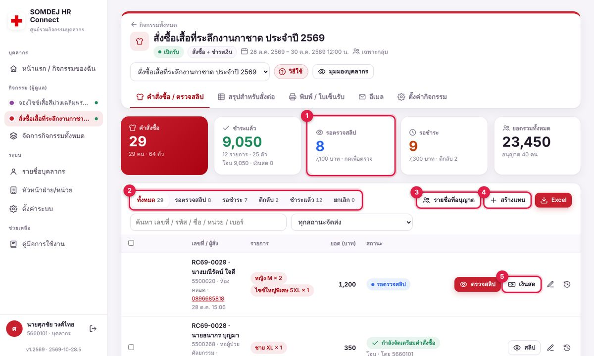
- การ์ดสรุป: คำสั่งซื้อ · ชำระแล้ว (แยกโอน/เงินสด) · รอตรวจสลิป (คลิกเพื่อกรอง) · รอชำระ · ยอดรวม
- แท็บกรอง: ทั้งหมด · รอตรวจสลิป · รอชำระ · ตีกลับ · ชำระแล้ว · ยกเลิก
- รายชื่อที่อนุญาต: กำหนดว่าใครสั่งได้
- สร้างแทน: สั่งให้คนที่แจ้งทางอื่น
- ปุ่มในแต่ละแถว: ตรวจสลิป / ยืนยันชำระ · เงินสด · แก้ไข · ประวัติ
ตรวจสลิป
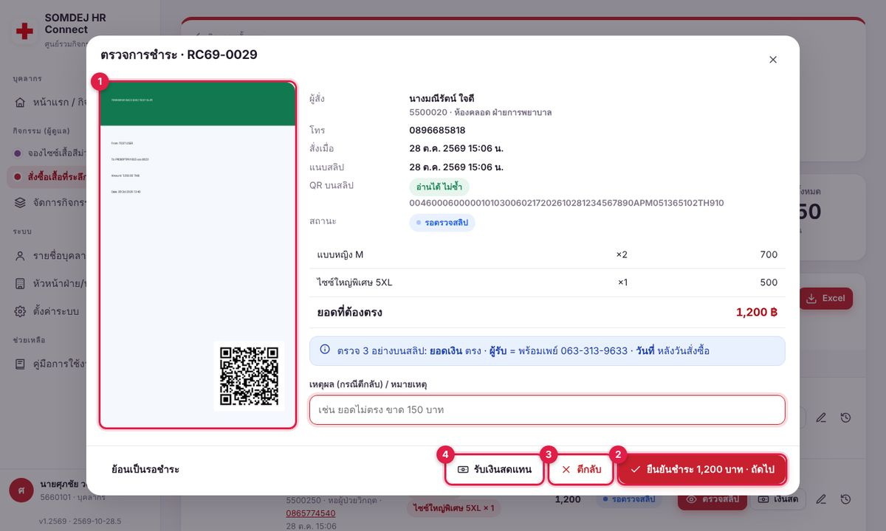
- สลิป (คลิกเพื่อขยาย) ด้านขวาแสดง ยอดที่ต้องตรง และผลอ่าน QR บนสลิป
- ยืนยันชำระ เมื่อตรวจ 3 อย่างตรงกัน: ยอดเงิน · ชื่อผู้รับ/พร้อมเพย์ · วันที่หลังสั่งซื้อ
- ตีกลับ พร้อมเหตุผล (เช่น "ยอดไม่ตรง ขาด 150 บาท") ผู้สั่งเห็นเหตุผลและแนบใหม่ได้
- รับเงินสดแทน ถ้าผู้สั่งมาจ่ายสดแทนการโอน
หลังกดยืนยัน/ตีกลับ ระบบ เปิดรายการถัดไปที่รอตรวจให้อัตโนมัติ และส่งอีเมลแจ้งผู้สั่ง (ถ้ามีอีเมล)
รับเงินสด
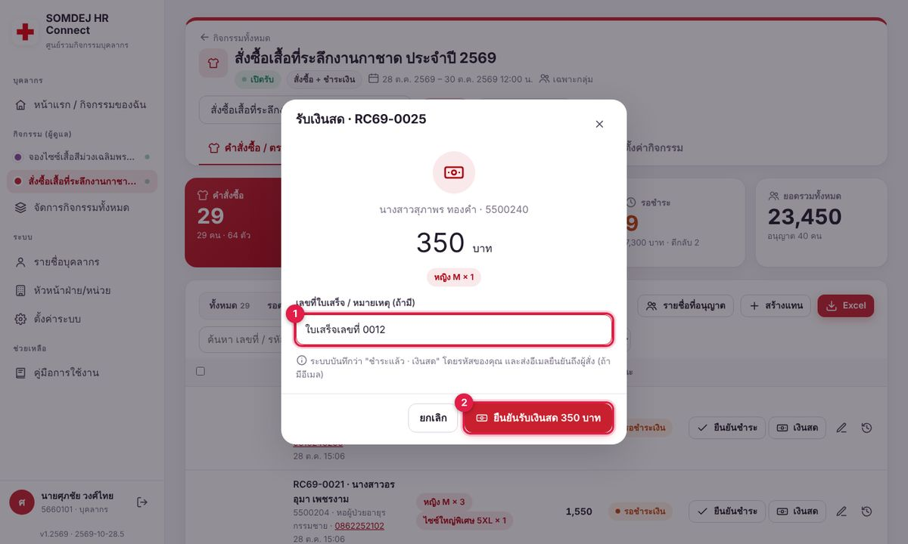
- กด เงินสด ในแถวคำสั่งซื้อ → ตรวจยอด → ใส่เลขใบเสร็จ → ยืนยันรับเงินสด สถานะเป็น ชำระแล้ว · เงินสด
- คนที่จ่ายสดแต่ยังไม่ได้สั่งในระบบ: สร้างแทน → ใส่รหัสพนักงาน + จำนวนแต่ละไซซ์ → ติ๊ก รับเงินสดแล้ว → บันทึก (จบในขั้นตอนเดียว)
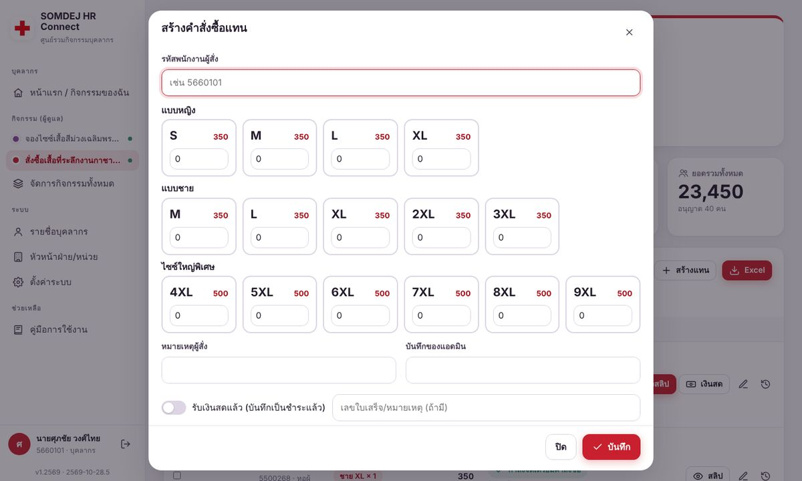
เปลี่ยนสถานะจัดส่งทีละหลายรายการ
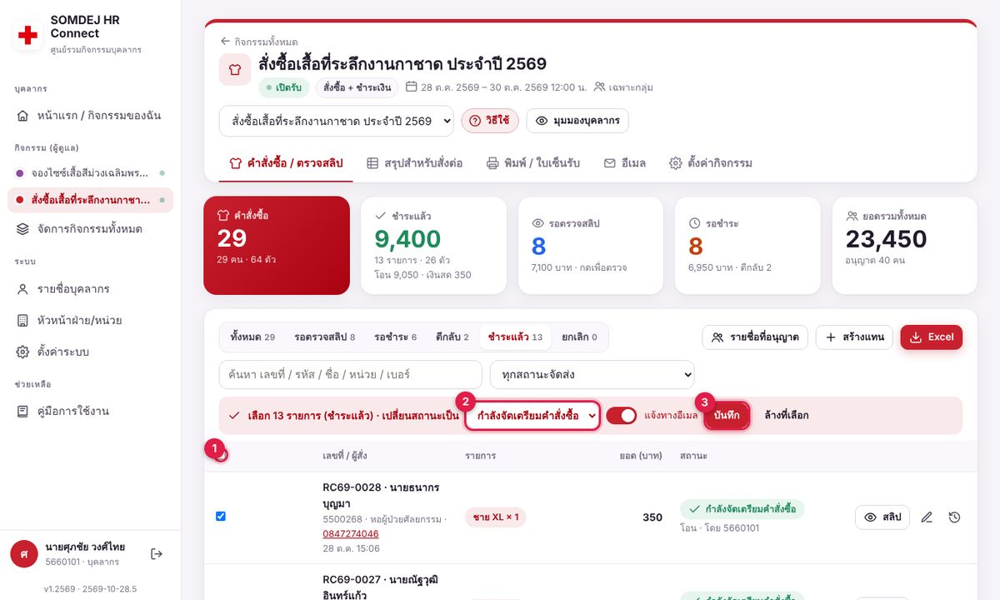
- แท็บ ชำระแล้ว → ติ๊กเลือก (ช่องบนสุด = เลือกทั้งหมด)
- เลือกสถานะใหม่: กำลังจัดเตรียมคำสั่งซื้อ · สั่งซื้อแล้ว รอจัดส่ง · ส่งแล้ว รอรับ · รับแล้ว (เลือกได้ว่าจะแจ้งอีเมลหรือไม่)
- กด บันทึก
รายชื่อที่อนุญาตให้สั่ง
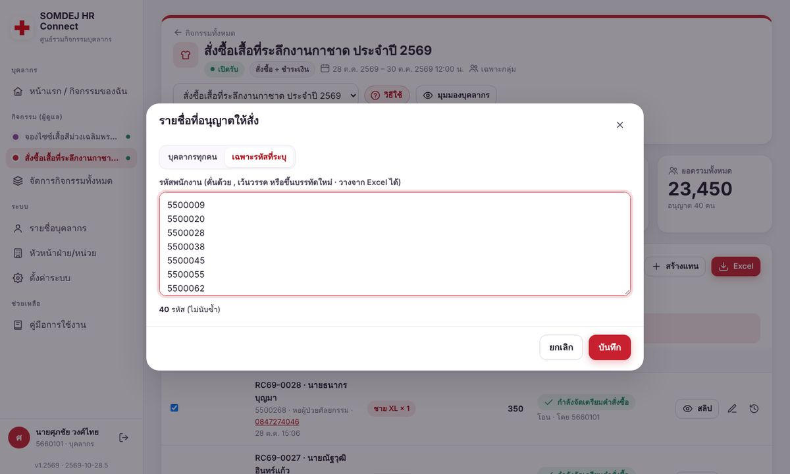
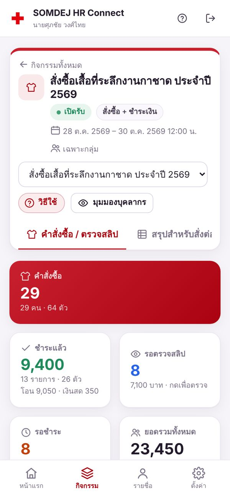
14. สรุปสำหรับสั่งต่อ
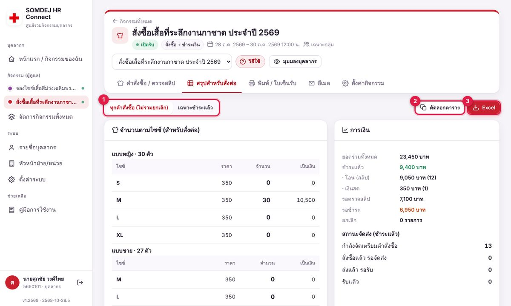
- เลือกนับ ทุกคำสั่งซื้อ (ไม่รวมยกเลิก) หรือ เฉพาะชำระแล้ว (ใช้ยอดนี้ตอนสั่งของจริง)
- คัดลอกตาราง ไปวางใน Excel/อีเมล/ไลน์
- Excel ได้ 3 แผ่น: สรุป · คำสั่งซื้อ · รายชิ้น
กล่อง การเงิน ด้านขวาแสดงยอดทั้งหมด ชำระแล้ว (โอน/เงินสด) รอตรวจ รอชำระ และจำนวนตามสถานะจัดส่ง
15. พิมพ์ / ใบเซ็นรับ (ใช้ตอนเสื้อมาถึง)
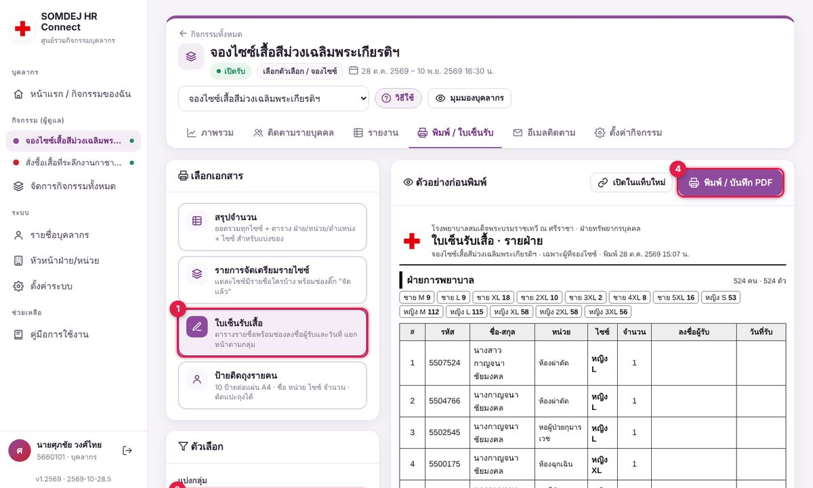
- เลือกเอกสาร 4 แบบ (ด้านล่าง)
- แบ่งกลุ่ม: รายฝ่าย · รายหน่วย · รายตำแหน่ง · รายไซซ์ · ไม่แบ่ง · มีตัวเลือกเฉพาะฝ่าย · เรียงตามชื่อ/รหัส · ขึ้นหน้าใหม่ทุกกลุ่ม
- ข้อความท้ายเอกสาร เช่น "รับเสื้อได้ที่ฝ่าย HR วันที่ …"
- พิมพ์ / บันทึก PDF (ในหน้าต่างพิมพ์ เลือกเครื่องพิมพ์ หรือ "บันทึกเป็น PDF") · เปิดในแท็บใหม่ ถ้าตัวอย่างไม่ขึ้นบนมือถือ
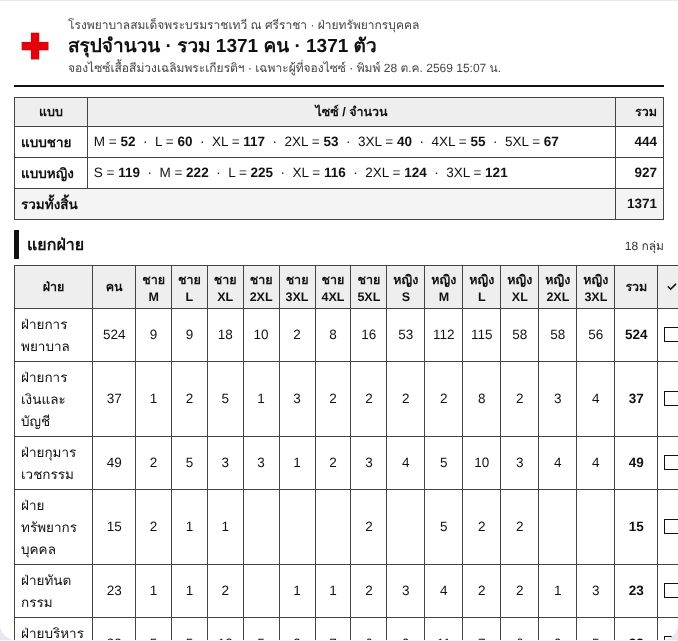
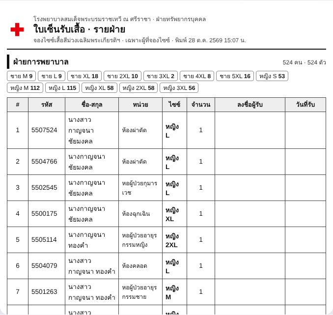
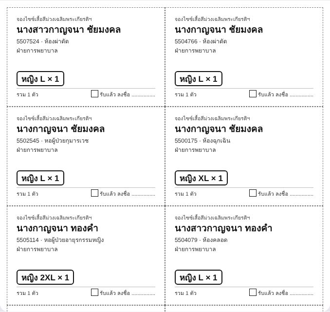
② รายการจัดเตรียมรายไซซ์ แต่ละไซซ์มีใครบ้าง พร้อมช่อง "จัดแล้ว" ใช้ตอนหยิบเสื้อแยกกอง
กิจกรรมสั่งซื้อเลือกได้ว่าพิมพ์ เฉพาะที่ชำระแล้ว หรือทุกคำสั่งซื้อ
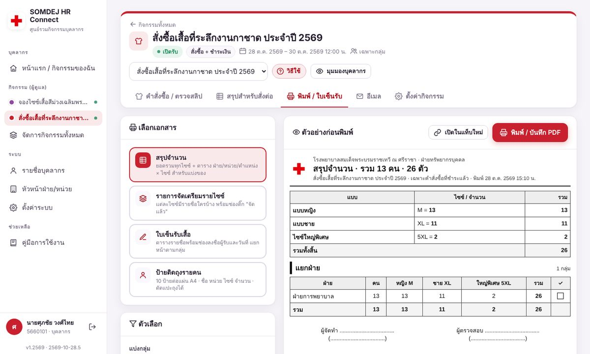
16. รายชื่อบุคลากร
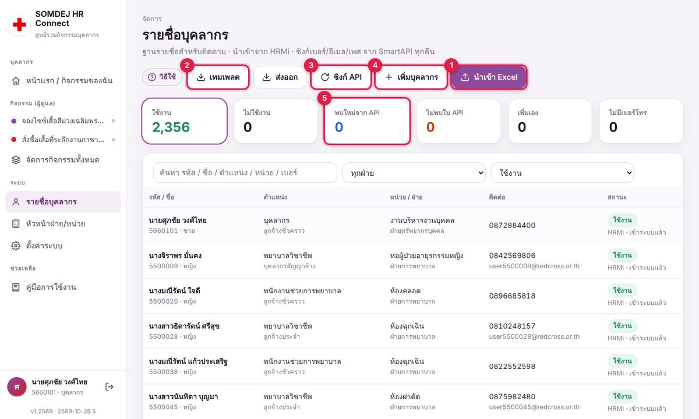
- นำเข้า Excel: ใช้ไฟล์ที่ส่งออกจาก HRMi ได้ตรง ๆ (.xls/.xlsx) หรือเทมเพลตของระบบ · ระบบ ข้ามคอลัมน์เลขบัตรประชาชน ไม่อ่าน ไม่ส่ง ไม่เก็บ
- เทมเพลต ไฟล์ตัวอย่างพร้อมคำอธิบายคอลัมน์
- ซิงก์ API: ดึงเบอร์โทร อีเมล เพศ จากระบบ HR (ทำอัตโนมัติหลังนำเข้า และทุกคืน 01:00)
- เพิ่มบุคลากร รายคน (เช่น บุคลากรภายนอกที่ต้องการให้ร่วมกิจกรรม)
- การ์ดกรอง: ใช้งาน · ไม่ใช้งาน · พบใหม่จาก API (เข้าระบบได้แต่ยังไม่อยู่ในไฟล์ที่นำเข้า) · ไม่พบใน API (ตรวจสอบว่าลาออกหรือไม่ ระบบไม่ปิดให้เอง) · เพิ่มเอง · ไม่มีเบอร์โทร
17. หัวหน้าฝ่าย/หน่วย
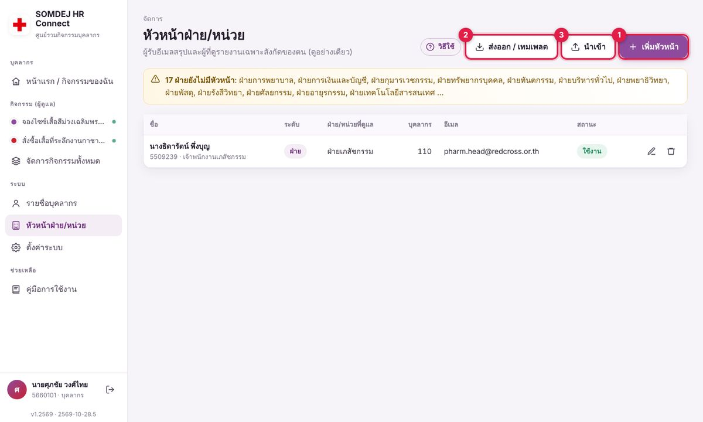
- เพิ่มหัวหน้า: ใส่รหัสพนักงาน (ระบบดึงชื่อให้) เลือกระดับ ฝ่าย หรือ หน่วย ฝ่าย/หน่วยที่ดูแล และอีเมลรับสรุป
- ส่งออก / เทมเพลต เพื่อแก้หลายคนพร้อมกันใน Excel
- นำเข้า ไฟล์ที่แก้แล้ว
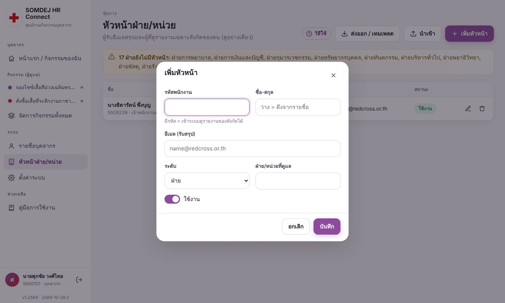
แถบเหลืองด้านบนเตือน ฝ่ายที่ยังไม่มีหัวหน้า · หัวหน้าที่ไม่มีอีเมล เข้าดูในระบบได้แต่ไม่ได้รับอีเมลสรุป
18. ตั้งค่าระบบ
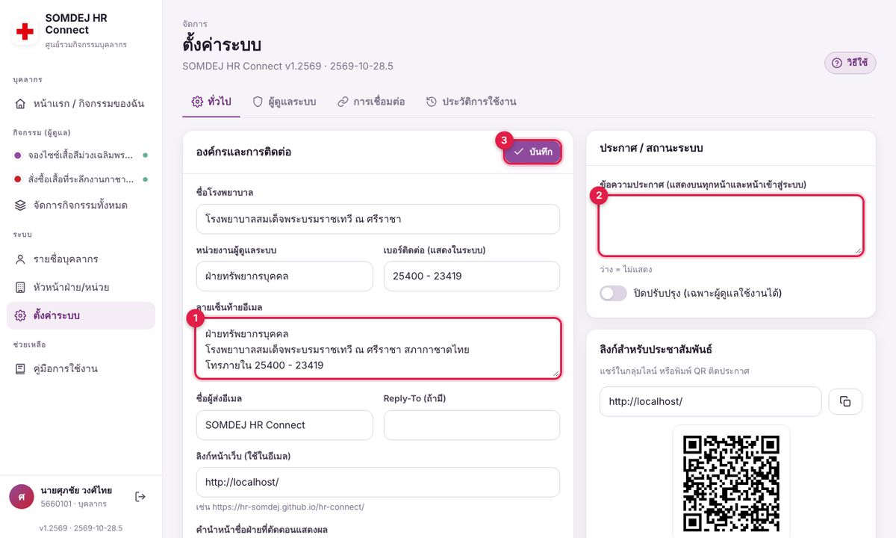
- ลายเซ็นท้ายอีเมล (ชื่อผู้ส่ง และ Reply-To อยู่ถัดลงมา)
- ข้อความประกาศ แสดงบนทุกหน้าและหน้าเข้าสู่ระบบ (เว้นว่าง = ไม่แสดง) · สวิตช์ ปิดปรับปรุง ให้เฉพาะผู้ดูแลเข้าได้
- บันทึก
การ์ดขวามี ลิงก์และ QR สำหรับประชาสัมพันธ์ · ด้านล่างแสดงโควตาอีเมลคงเหลือวันนี้ และรุ่นหลังบ้านว่าตรงกับหน้าเว็บหรือไม่
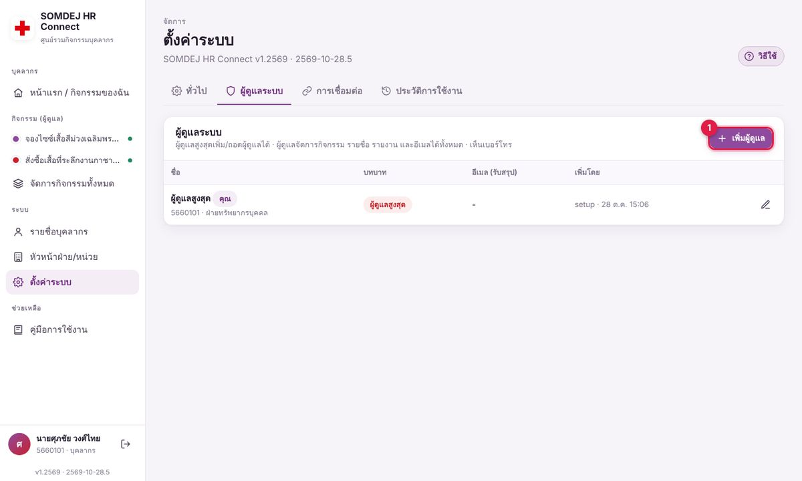
แท็บ การเชื่อมต่อ: ตรวจว่าตั้งค่าบัญชี SmartAPI แล้ว · ปุ่มทดสอบการเชื่อมต่อ · แก้ Path เมื่อไอทีเปลี่ยนจาก /uat/ เป็น production
ขั้นตอนงานตั้งแต่ต้นจนจบ (สำหรับ HR)
กิจกรรมจองไซซ์เสื้อสีม่วงเฉลิมพระเกียรติฯ (ปิดรับ 10 พ.ย. 2569 16:30 น.)
- ส่งข้อความไลน์ + QR (ตั้งค่าระบบ › ลิงก์สำหรับประชาสัมพันธ์)
- ดูภาพรวมทุกวัน · คลิกฝ่ายที่ % ต่ำ
- ติดตาม › ยังไม่ตอบ › คัดลอกเบอร์ / อีเมลเตือน
- อีเมลสรุปถึงหัวหน้า (ส่งเอง หรือตั้งรอบ จ./พฤ.)
- บันทึกแทนคนที่แจ้งทางโทรศัพท์
- ปิดรับ (ขยายเวลาได้ที่ตั้งค่ากิจกรรม)
- ภาพรวม › สรุปส่งจัดซื้อ › กรอก MS Forms ภายใน 15 พ.ย.
- เสื้อมาถึง: พิมพ์สรุปจำนวน → จัดตามไซซ์ → ใบเซ็นรับรายฝ่าย
กิจกรรมสั่งซื้อเสื้อที่ระลึกงานกาชาด (ปิดรับ 30 ต.ค. 2569 12:00 น.)
- ใส่รายชื่อที่อนุญาต
- ส่งข้อความไลน์ให้กลุ่มที่กำหนด
- ตรวจสลิปทุกวัน (แท็บ รอตรวจสลิป)
- รับเงินสด / สร้างแทน
- ปิดรับ · สรุปสำหรับสั่งต่อ (เฉพาะชำระแล้ว)
- เปลี่ยนสถานะ: กำลังจัดเตรียม → สั่งซื้อแล้ว รอจัดส่ง
- ของมาถึง: พิมพ์ป้ายติดถุง + ใบเซ็นรับ
- เปลี่ยนสถานะ: ส่งแล้ว รอรับ → รับแล้ว
ปัญหาที่พบบ่อย
เข้าสู่ระบบไม่ได้ / ขึ้นว่าข้อมูลไม่ตรง
ตรวจรหัสพนักงาน และเลขบัตรประชาชน 13 หลัก (กดรูปตาเพื่อดู) · ผิด 5 ครั้งต้องรอ 10 นาที · ถ้ายังไม่ได้ อาจเป็นข้อมูลในระบบ HR ไม่ตรง ติดต่อ HR ให้ตรวจสอบหรือบันทึกแทนขึ้นว่า "เชื่อมต่อระบบ HR ไม่ได้" หรือ "เซิร์ฟเวอร์ไม่ว่างชั่วคราว"
ระบบตรวจตัวตนของโรงพยาบาลไม่ตอบชั่วคราว รอสักครู่แล้วลองใหม่เลือกไซซ์ผิด ต้องการแก้
ก่อนปิดรับ: เข้าระบบ → แตะกิจกรรม → แก้ไข · หลังปิดรับ: ติดต่อ HR ให้แก้แทนไม่ได้รับอีเมลยืนยัน
ระบบส่งอีเมลตามที่อยู่ในระบบ HR เท่านั้น ถ้าไม่มีหรือไม่ถูกต้องจะไม่ได้รับ (ดูผลบันทึกได้ในระบบเสมอ) · ลองดูในโฟลเดอร์ Spam/Junkแนบสลิปแล้วขึ้นว่า "สลิปนี้เคยใช้กับคำสั่งซื้อ…"
ระบบพบว่าเลขอ้างอิงบนสลิปซ้ำกับคำสั่งซื้ออื่น กรุณาตรวจว่าเลือกรูปถูกใบ ถ้าโอนรวมหลายคำสั่งซื้อในครั้งเดียว ติดต่อ HRระบบอ่าน QR บนสลิปไม่ได้
ส่งสลิปได้ตามปกติ HR จะตรวจด้วยตา · ใช้รูปสลิปต้นฉบับจากแอปธนาคาร (ไม่ครอปตัด QR ออก) จะอ่านได้ดีที่สุดหน้าเว็บขึ้นแถบ "มีระบบรุ่นใหม่" หรือหน้าตาไม่เปลี่ยนหลังอัปเดต
กดปุ่ม โหลดใหม่ ในแถบนั้น หรือปิดแล้วเปิดลิงก์ใหม่ · บนคอมกด Ctrl + F5(ผู้ดูแล) ตัวเลขในหน้าภาพรวมไม่อัปเดต
กด รีเฟรช มุมขวาบน · ระบบเก็บข้อมูลชั่วคราวเพื่อให้เปิดเร็ว(ผู้ดูแล) ส่งอีเมลไม่ออก
ดูโควตาคงเหลือที่ ตั้งค่าระบบ (ประมาณ 1,500 ฉบับ/วัน รีเซ็ตทุกวัน) · ดูผลใน "บันทึกการส่ง" ของกิจกรรมฝ่ายทรัพยากรบุคคล โรงพยาบาลสมเด็จพระบรมราชเทวี ณ ศรีราชา สภากาชาดไทย · โทรภายใน 25400 - 23419